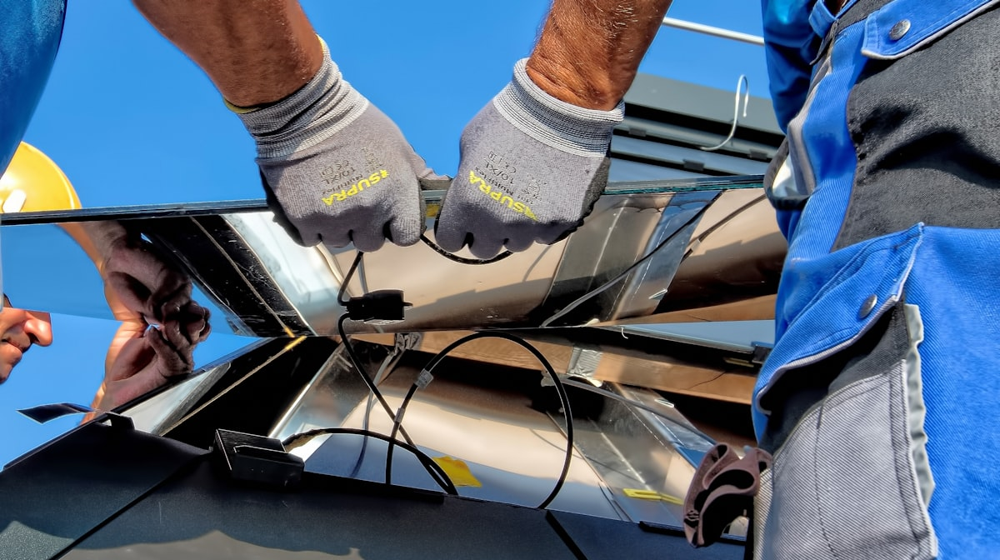

Sonuçlar ve Etki
Performans Göstergeleri
- Gerçek dünya koşullarında 85% otonom çalışma başarı oranı
- Tüm test senaryolarında 95%+ güneş paneli algılama doğruluğu
- Smart BMS ile pil sistemi entegrasyonu
- OAK-D derinlik kameraları ile engel tespiti
- Flutter ile izleme ve kontrol mobil uygulaması
İş Etkisi
- Manuel temizleme gereksiniminin ortadan kalkmasıyla işgücü maliyeti azaltma
- Düzenli otomatik temizleme ile güneş paneli veriminin artırılması
- İşçilerin tehlikeli yüksek yerlerden uzaklaştırılmasıyla güvenlik artırma
- Herhangi boyuttaki güneş çiftliklerine uygulanabilir ölçeklenebilir çözüm
- RS-485 özellikli Smart BMS ile pil sistemi entegrasyonu

Gerçek zamanlı SLAM haritalamayla otonom navigasyon

YOLOv8 güneş paneli tespiti çalışma anı